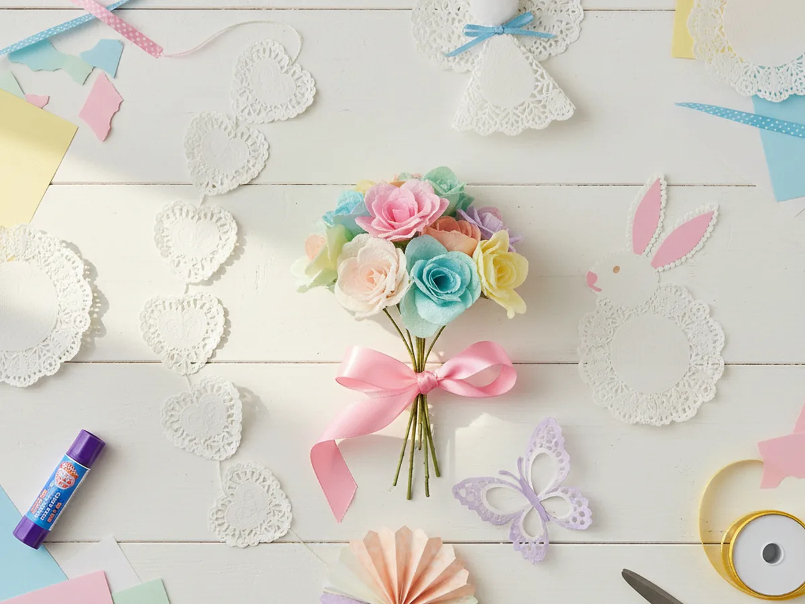
There is something genuinely magical about the lacy little pattern of a paper doily. With almost no effort, it turns the simplest craft into something that feels pretty and special. We pulled together 20 warm and easy paper doily crafts your kids will absolutely love, all made with basic supplies you probably already have tucked away at home.
What You'll Need
Grab these basics before you start. Most of them work across nearly every idea on this list, so one quick supply gathering covers you for the whole afternoon.
- White round paper doilies, the star of every idea here, any size from 6 to 12 inches works.
- Crayola construction paper, in a mix of colors for cutting shapes and backgrounds.
- Fiskars blunt-tip kids scissors, safe little scissors that cut paper cleanly.
- Elmer's washable glue sticks, perfect for attaching doily pieces with no mess.
- Crayola washable broad line markers, for adding faces, patterns, and little details.
- Satin ribbon in assorted colors, for hanging ornaments, garlands, and bows.
- Optional extras: watercolors, googly eyes, pipe cleaners, glitter glue, pom-poms.
20 Simple Paper Doily Craft Ideas
1. Doily Flower Bouquet
Pinch the center of a round doily, twist the bottom, and wrap a green pipe cleaner around it to form a sweet little flower on a stem. Make three or four in different colors and tie them with ribbon for a handmade bouquet. These paper doily crafts are one of those ideas that look so much fancier than they actually are, which is the best feeling.
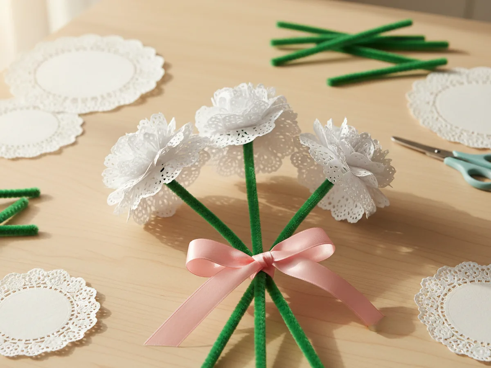
2. Doily Snowflake Window Display
Glue a few white doilies onto a piece of blue construction paper, then add small cotton ball clouds and silver glitter accents. Tape the finished scene to a window and watch it glow beautifully in the afternoon light. The lacy pattern already looks like snowflakes, so you barely have to do anything to make it feel magical.
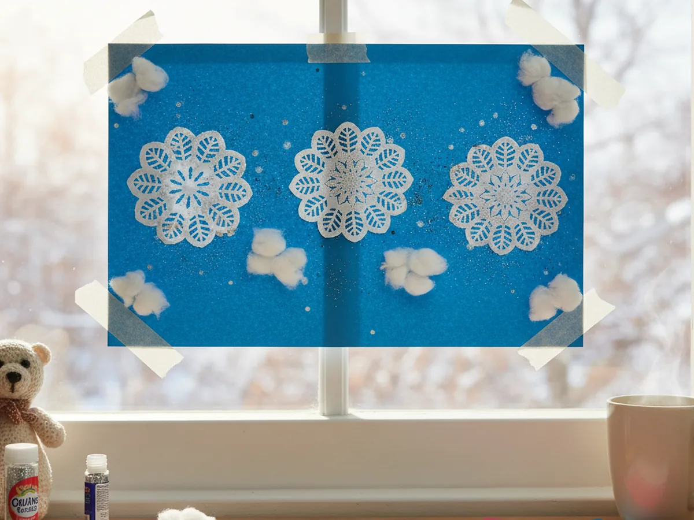
3. Doily Angel Ornament
Fold a doily into a cone for the body, add a small peach-colored paper circle for the face, and glue a second smaller doily on the back as wings. Top it off with a gold paper halo and a tiny ribbon loop for hanging. These sweet angels look gorgeous on a Christmas tree or hung from a nursery ceiling.
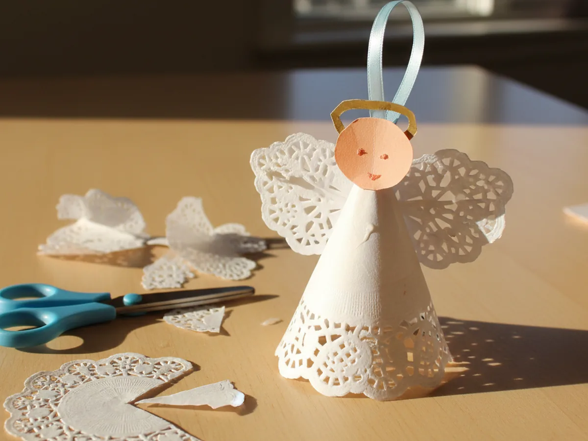
4. Doily Butterfly
Pinch a doily in the middle to make it look like butterfly wings, then wrap a brown pipe cleaner around the center as the body. Shape the ends of the pipe cleaner into little antennae. Add googly eyes if you have them for an extra dose of charm. These are among the most adorable doily crafts for kids you can whip up in minutes.
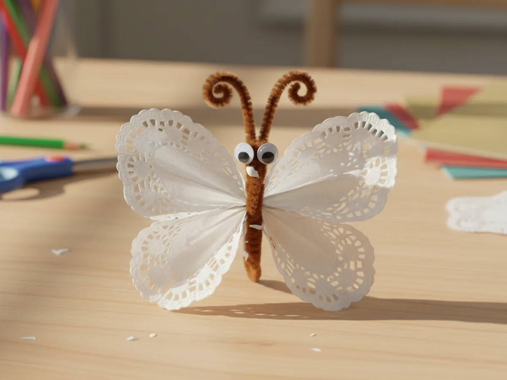
5. Doily Mother's Day Lace Card
Fold a piece of pink cardstock in half, glue a white doily on the front, and add a small heart cut from red paper in the middle. Let your child write a message inside in their own handwriting. The lacy texture makes this simple card feel like a truly special keepsake, and moms and grandmas absolutely melt when they see it. 💌
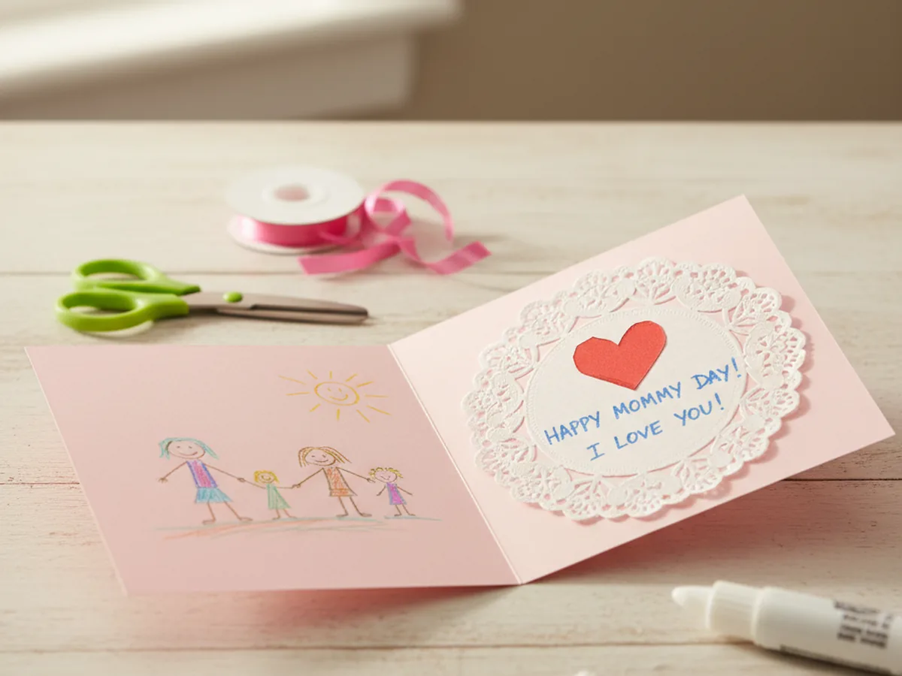
6. Doily Valentine Heart Garland
Fold doilies in half and cut them into heart shapes, then string several of them together with a long piece of red ribbon. Hang the garland across a doorway or along a shelf for a romantic, handmade Valentine's Day touch. Kids love running back and forth to see it move when a breeze catches it.
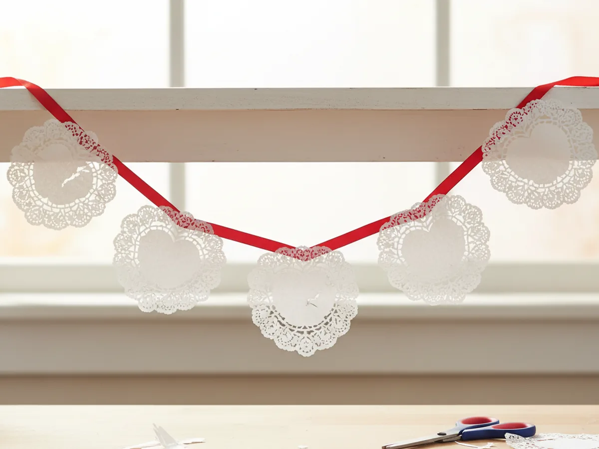
7. Doily Dreamcatcher
Glue a large doily onto a cardstock ring, then attach long ribbons and strings of beads hanging from the bottom. Finish with a few small paper feathers cut from colored paper. This one makes a lovely bedroom decoration, and the crafting process itself feels peaceful and calm for older kids.
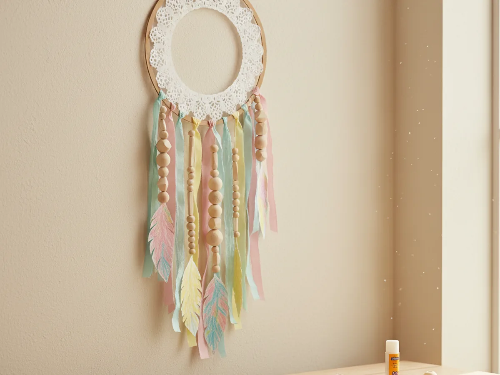
8. Doily Umbrella
Fold a doily into quarters to create a cone-like umbrella shape, then attach a bent pipe cleaner handle to the top. These mini umbrellas are so charming grouped together on a rainy afternoon display or used as dollhouse accessories. They are one of those small surprising easy doily crafts kids proudly show off to everyone.
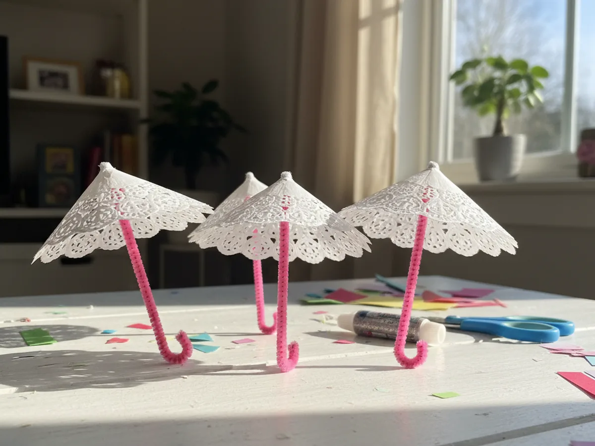
9. Doily Ballerina Princess
Draw a simple stick-figure ballerina on cardstock, then glue a doily folded into a skirt around her waist to create a fluffy tutu. Add a little crown or a hair ribbon for extra sparkle. This craft is especially dear to kids who love dance or dress-up play, and it makes a lovely room decoration.
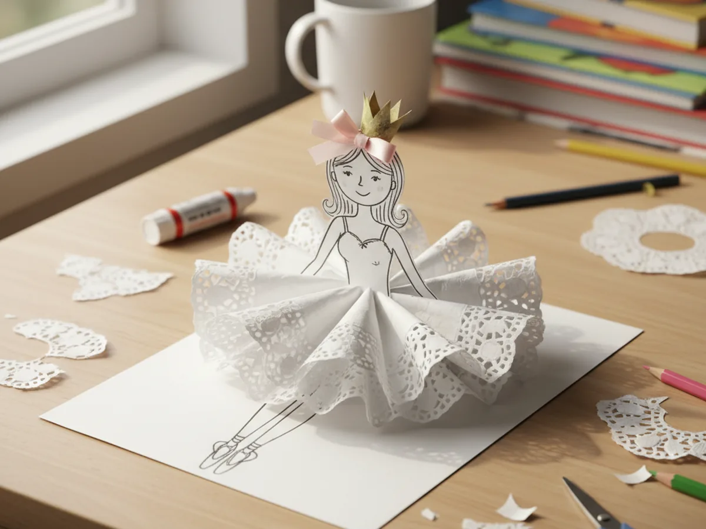
10. Doily Jellyfish
Glue a round doily at the top of a blue construction paper background, then add long curly ribbon strips hanging underneath as tentacles. A pair of googly eyes on the doily finishes the face. Kids love how this one looks like it is genuinely swimming, and it doubles as a cheerful bathroom or nursery wall decoration.
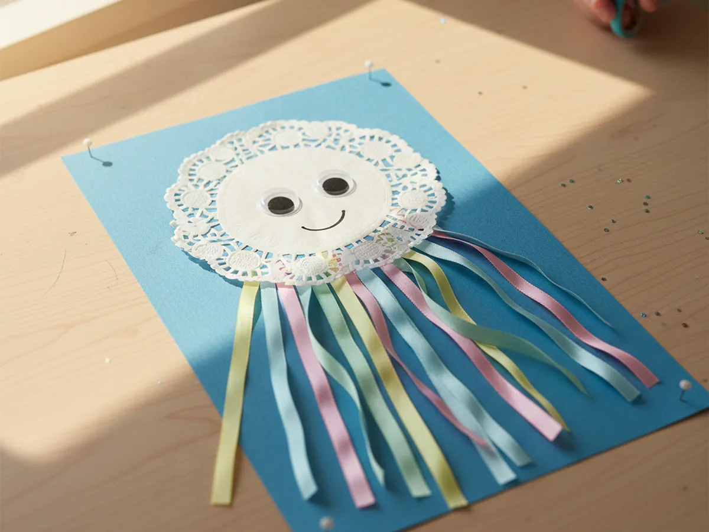
11. Doily Wreath
Overlap six to eight doilies along a cardstock ring and glue them in place to form a full, frilly wreath. Tie a pink or red ribbon bow at the top for hanging. This is such a pretty paper doily craft for adding a soft, handmade touch to any door or bedroom wall in the house.
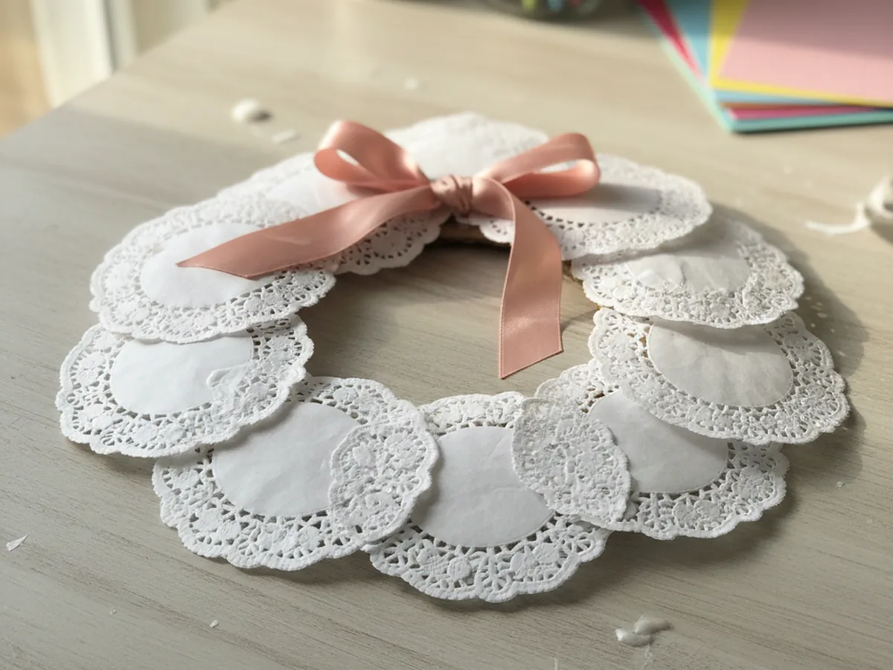
12. Doily Sun Catcher
Brush a doily gently with watercolors in pinks and yellows, let it dry, and tape it to a sunny window. The light shining through the lace pattern looks absolutely gorgeous and creates pretty patterns on the floor. Painting doilies is a dreamy activity that keeps kids focused and quietly happy. 🌸
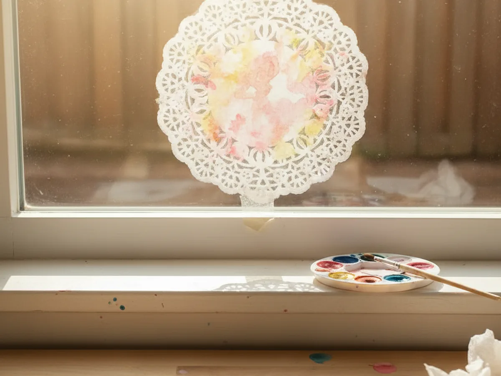
13. Doily Easter Bonnet
Glue a doily onto the top of a paper plate and trim the edges so the lacy pattern peeks out. Add paper flowers, ribbons, and tiny paper bunny ears for a sweet Easter look. Little ones love wearing their finished bonnet around the house or to an Easter brunch with the family.
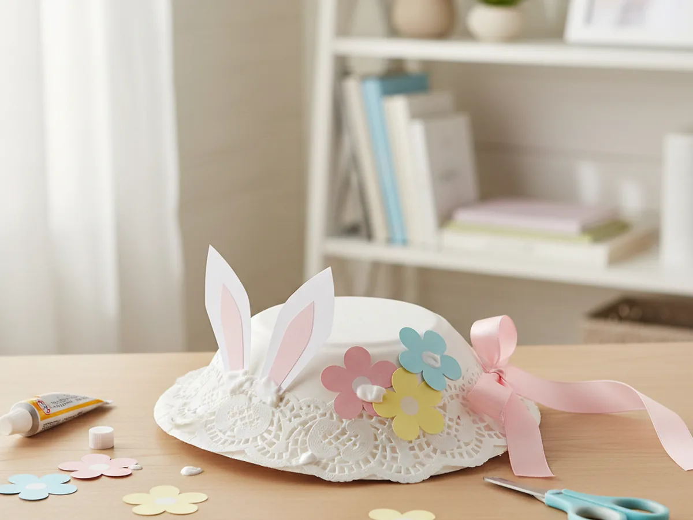
14. Doily Paper Lantern
Roll a rectangular piece of pink or yellow cardstock into a cylinder and tape the edges. Wrap a doily around the outside and glue it in place, then punch two holes near the top and thread a ribbon through as a handle. Place a small battery-powered tea light inside and the lace pattern glows softly in the dark.
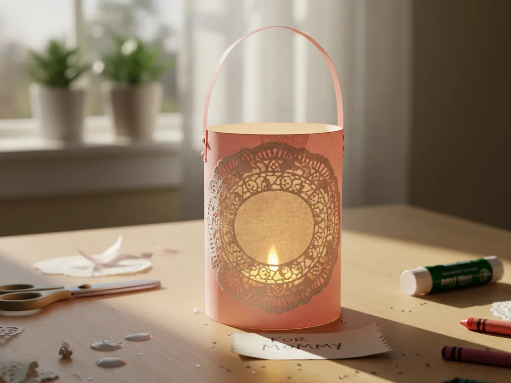
15. Doily Princess Crown
Cut a doily in half to create a curved crown shape, decorate it with marker jewels and sparkly stickers, then tape the ends to a strip of cardstock sized to fit around your child's head. These crowns are ridiculously cute and turn any regular afternoon into a full royal tea party in about ten minutes flat.
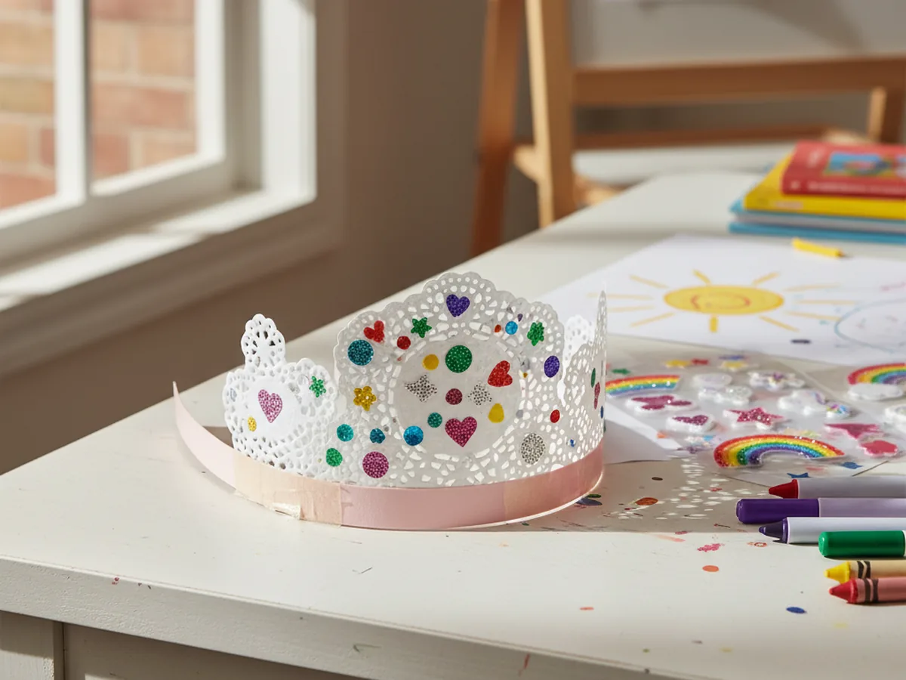
16. Doily Garland
Thread a long piece of twine or ribbon through the lace holes at the edges of several doilies, spacing them evenly along the string. Drape the finished garland across a mantel, along a wall, or above a bed for a romantic, handmade vibe. You can learn more about the history of traditional paper doilies if your kids are curious about where they came from.
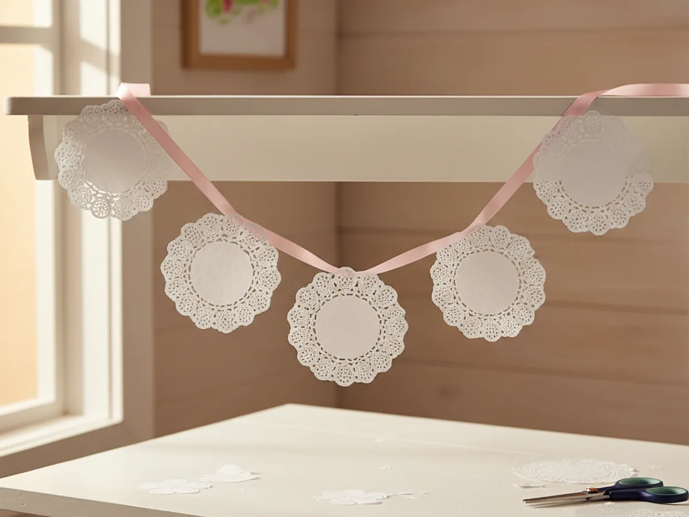
17. Doily Fan
Accordion-fold a paper doily back and forth, pinch the bottom edge, and secure it with tape to create a cute little handheld fan. Add a ribbon loop at the bottom so it can hang from a wrist. These make adorable party favors, and kids love using them during a pretend tea party or an imaginary fancy dance.
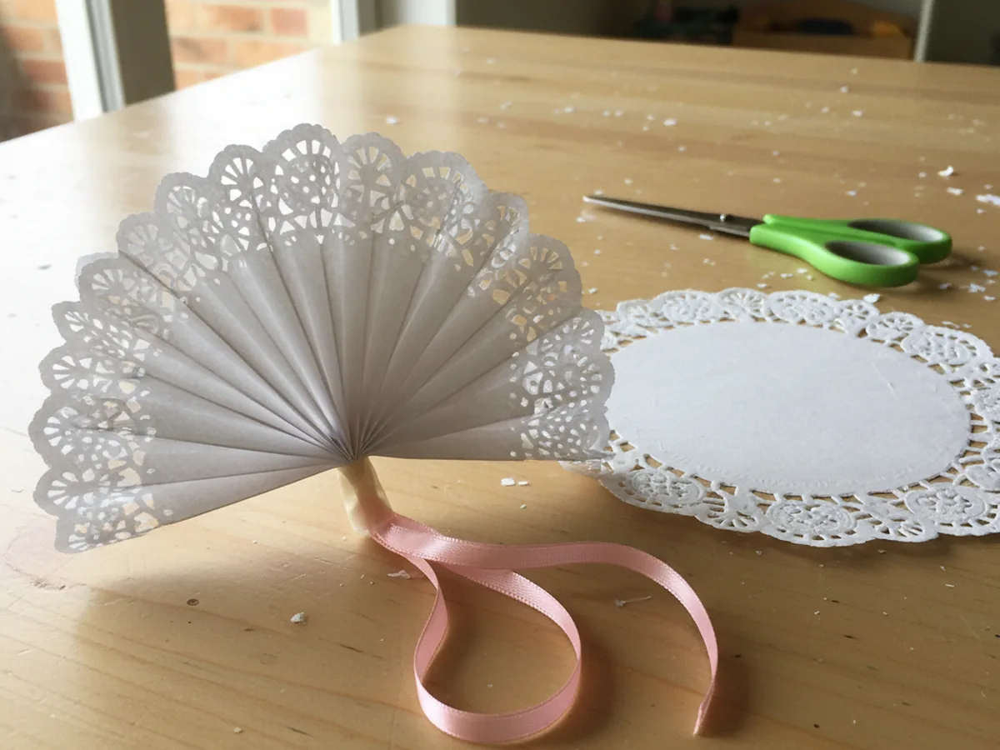
18. Doily Bookmark
Cut a doily into a long thin rectangle, glue it onto a strip of colored cardstock, and punch a small hole at the top. Thread a ribbon through the hole for a charming tassel. These lacy doily bookmarks are a lovely quiet-time project, and they make thoughtful little gifts for grandparents or teachers.
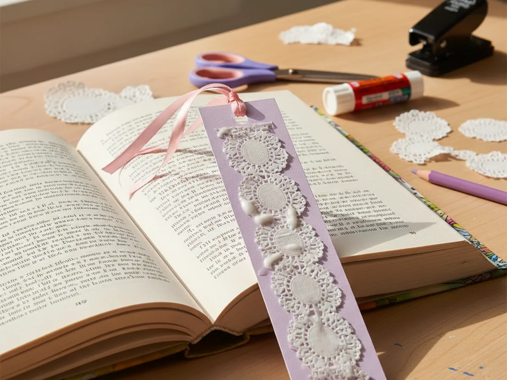
19. Doily Rainbow Fish
Cut a large fish shape from bright paper, then glue overlapping small doily circles along the body as shimmery, lacy scales. Add a large googly eye and a smiling mouth drawn with marker. The doilies turn an ordinary paper fish into something that truly looks like it swam out of a storybook.
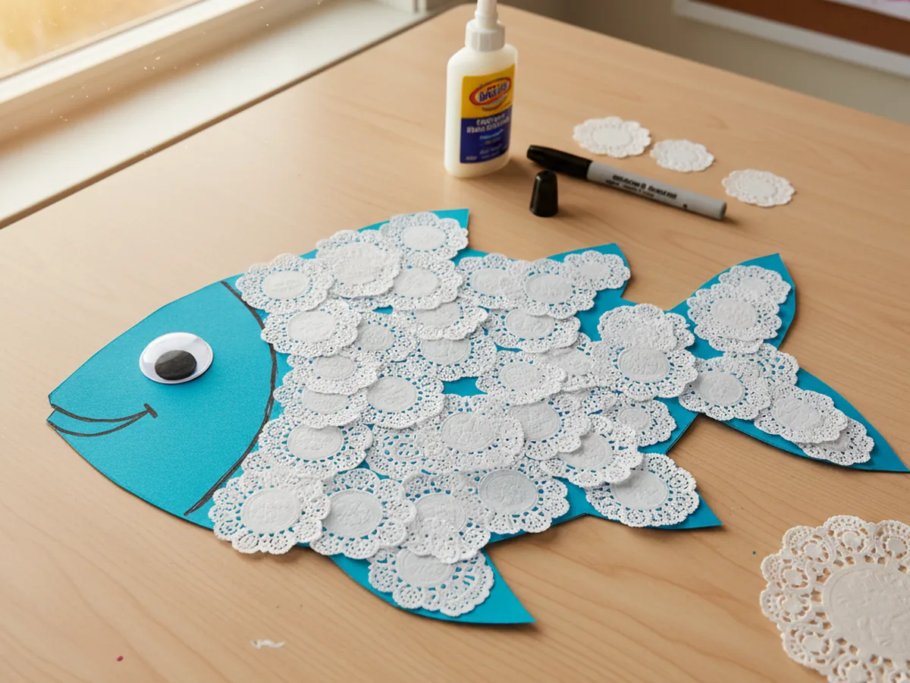
20. Doily Bunny
Glue a doily onto cardstock as the bunny's fluffy body, cut two long paper ear shapes, and add a pom-pom tail and a pink paper nose. Draw the face with markers, including whiskers and a sweet little smile. This is one of the softest, cuddliest-looking paper doily crafts and it is perfect for springtime or Easter. 🐰
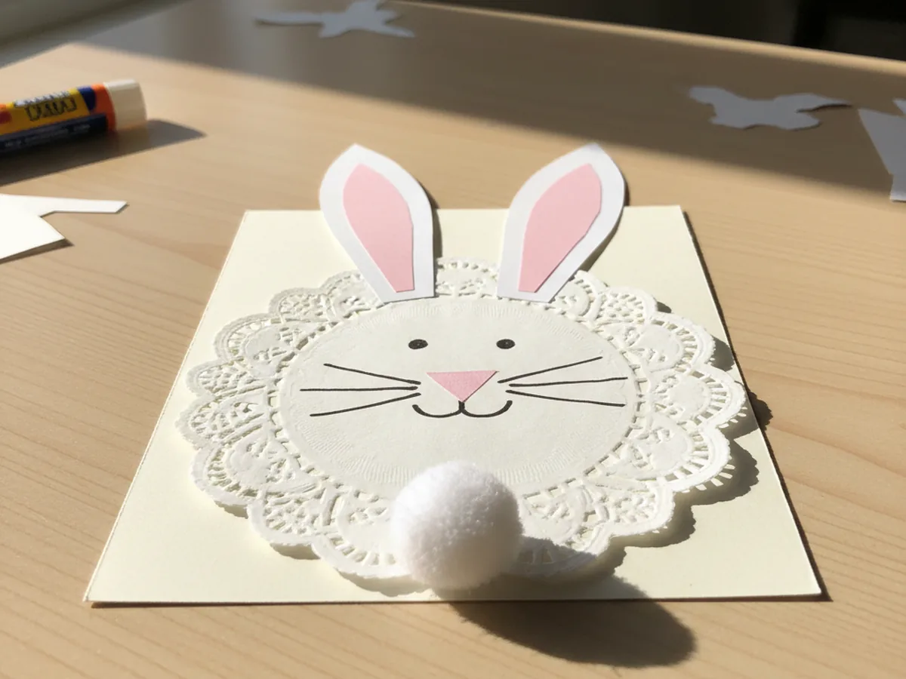
Final Thoughts
These paper doily crafts are proof that the simplest supplies often lead to the sweetest moments. Whether you try one idea this afternoon or slowly work your way through the whole list, we hope these ideas bring a little handmade magic to your time together. Happy crafting, friend! 💛
More Crafts You'll Love
If your little ones are in the mood for more paper fun, these two are perfect for your next cozy afternoon together.
- Gorgeous Paper Flower Craft for Kids - So Easy Even Toddlers Can Make a Beautiful Bouquet!
- 20 Sweet Mother's Day Paper Crafts Kids Will Love
Pick an idea, grab a few doilies, and enjoy a lovely little creative moment with your kids today.